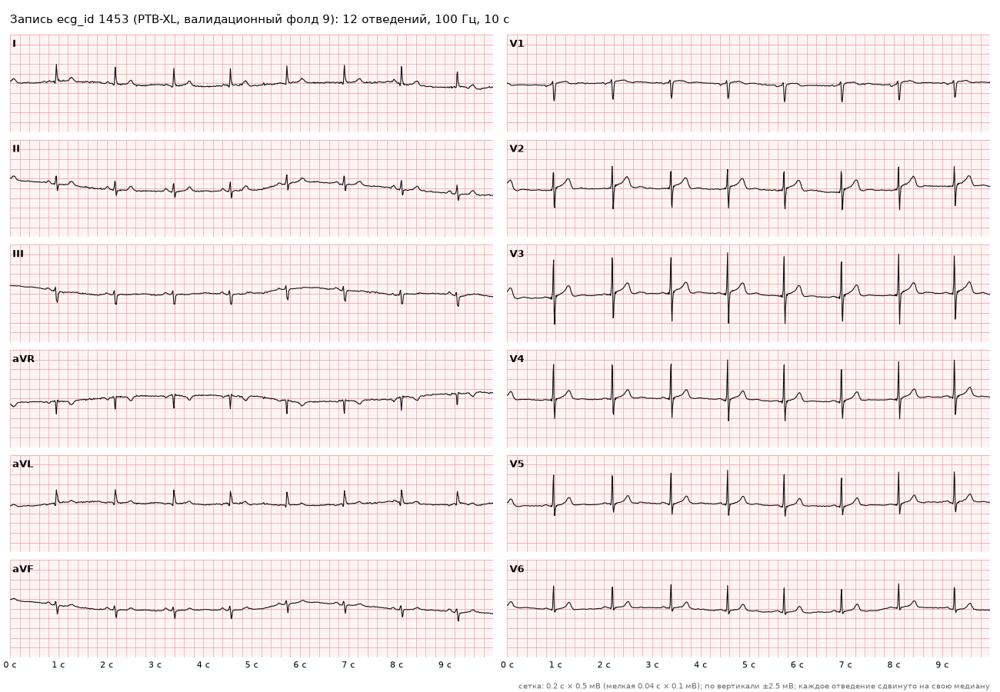
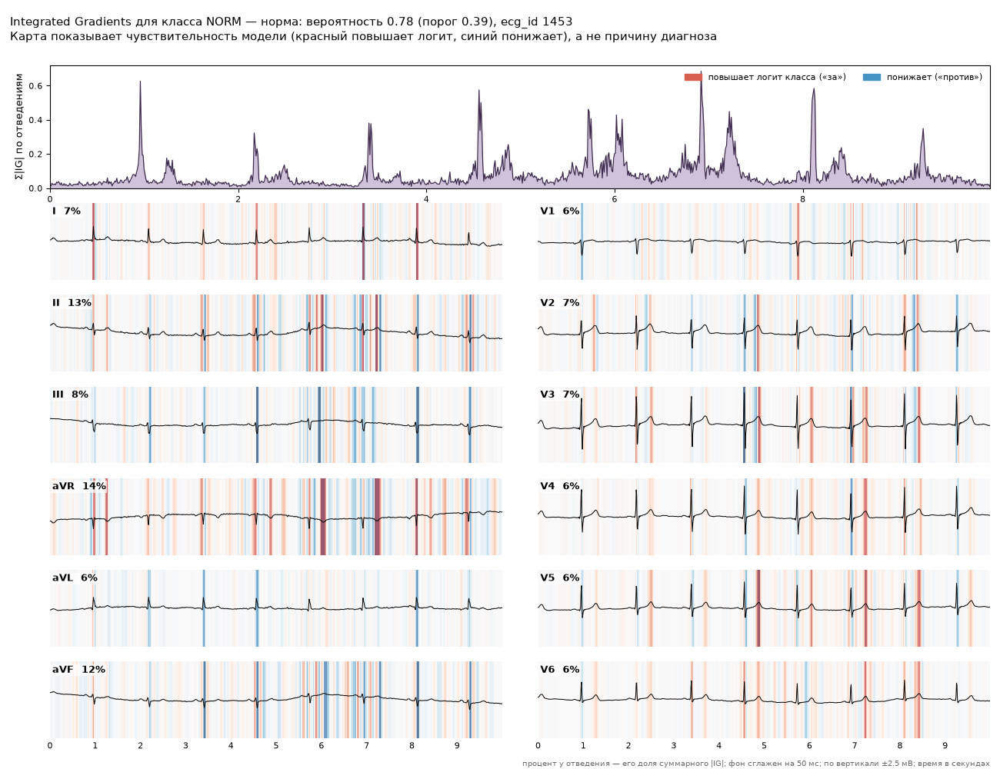
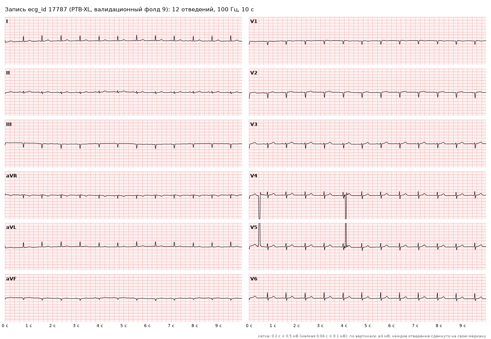
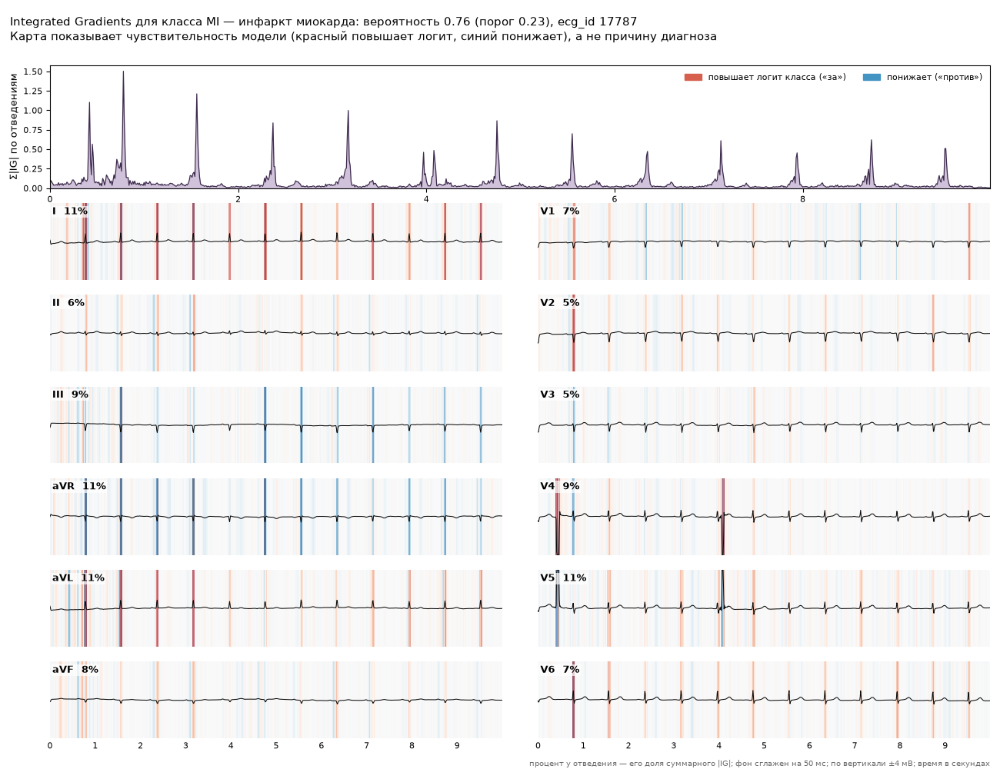
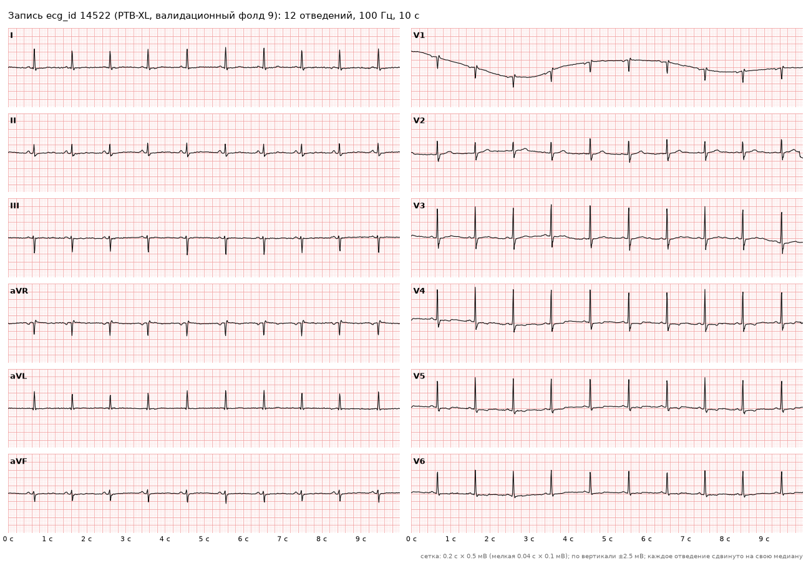
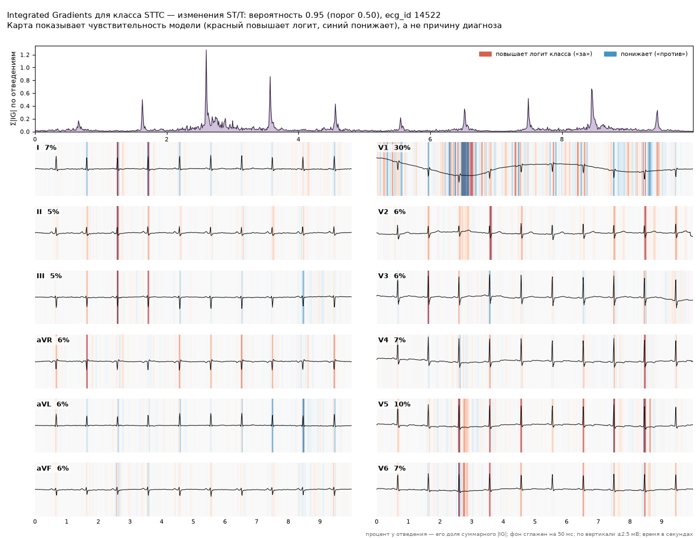
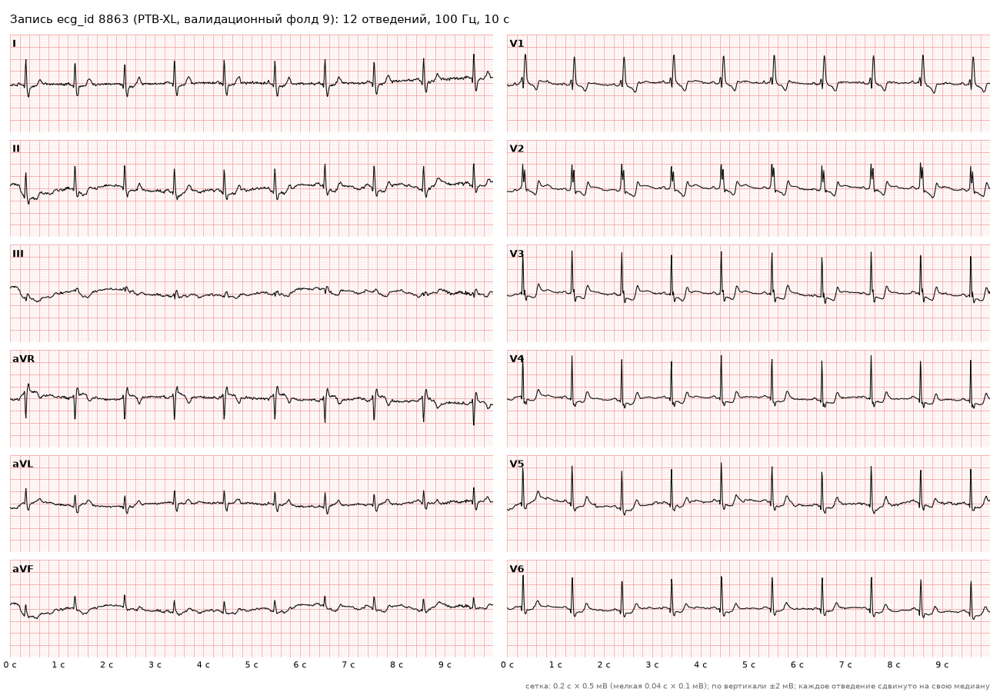
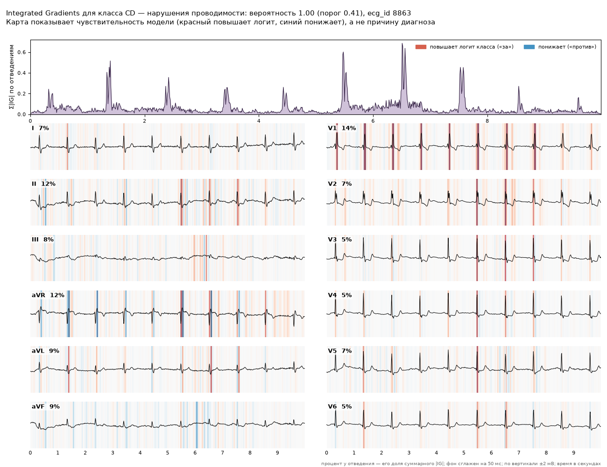
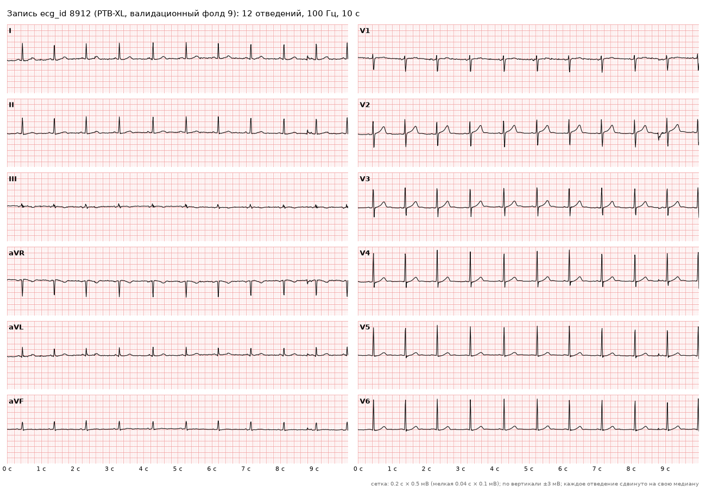
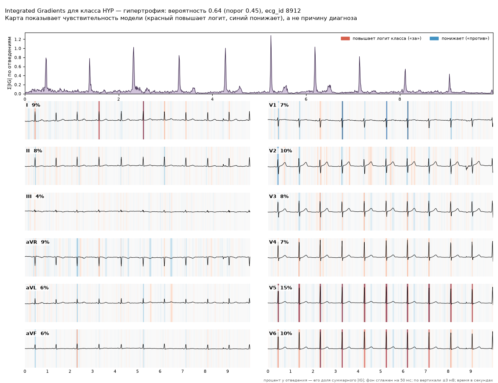

Классификация 12-канальной ЭКГ (PTB-XL, 5 суперклассов)
Статическая страница с пятью заранее посчитанными примерами. Ничего не загружается и не вычисляется в браузере. Код и подробности: репозиторий проекта.
Как это устроено
Задача. По 10-секундной записи 12-канальной ЭКГ (100 Гц) модель оценивает вероятность каждого из пяти диагностических суперклассов. Классы не исключают друг друга (multi-label): у записи может быть несколько меток.
- NORM — норма
- MI — инфаркт миокарда
- STTC — изменения ST/T
- CD — нарушения проводимости
- HYP — гипертрофия
Данные. PTB-XL (Wagner et al., 2020, Scientific Data; PhysioNet,
лицензия CC BY 4.0). Стандартное разбиение по strat_fold: обучение на фолдах 1–8, выбор модели,
температура и пороги на фолде 9 (val), финальная оценка один раз на фолде 10 (test). Записи без диагностического
суперкласса исключены (train 334, val 37, test 40).
Модель. Одномерная свёрточная сеть (2026-11-06_cnn1d_aug) с аугментациями,
вход — все 12 отведений, z-нормализация статистиками train. Вероятности откалиброваны температурным шкалированием,
пороги классов подобраны на val.
Качество на тесте
Фолд 10, 2158 записей, 1877 пациентов. В скобках 95% доверительный интервал (перцентильный бутстреп по пациентам, 2000 реплик, парный для разницы). Пороги и температура взяты с val без пересчёта.
| Метрика | CNN 1D (модель) | LightGBM (бейзлайн) | Разница |
|---|---|---|---|
| macro AUROC | 0.922 [0.914; 0.929] | 0.880 [0.871; 0.889] | 0.042 [0.035; 0.049] |
| macro F1 (пороги с val) | 0.743 [0.727; 0.757] | 0.666 [0.649; 0.681] | 0.076 [0.063; 0.091] |
| macro PR-AUC | 0.811 [0.794; 0.827] | 0.739 [0.719; 0.757] | 0.073 [0.058; 0.087] |
AUROC по классам
| Класс | AUROC CNN 1D | AUROC LightGBM | Разница |
|---|---|---|---|
| NORM | 0.941 [0.931; 0.950] | 0.904 [0.890; 0.916] | 0.037 [0.028; 0.047] |
| MI | 0.923 [0.910; 0.934] | 0.848 [0.828; 0.865] | 0.075 [0.060; 0.092] |
| STTC | 0.934 [0.922; 0.945] | 0.898 [0.882; 0.912] | 0.036 [0.026; 0.048] |
| CD | 0.913 [0.894; 0.929] | 0.866 [0.844; 0.887] | 0.047 [0.031; 0.062] |
| HYP | 0.899 [0.879; 0.917] | 0.886 [0.862; 0.907] | 0.013 [-0.001; 0.028] |
Примеры
По одной случайной записи на класс (seed 42) из валидационного фолда 9: у записи ровно одна метка, и модель нашла этот класс (вероятность выше порога). Записи не отбирались вручную, но отбор среди верно найденных означает, что ошибок модели здесь нет; они есть в метриках выше. Переход к примеру: NORM · MI · STTC · CD · HYP.
NORM — норма · ecg_id 1453
| Класс | Вероятность | Порог (с val) | Ответ модели |
|---|---|---|---|
| NORM — норма | 0.782 | 0.387 | выше порога |
| MI — инфаркт миокарда | 0.009 | 0.229 | ниже порога |
| STTC — изменения ST/T | 0.098 | 0.502 | ниже порога |
| CD — нарушения проводимости | 0.177 | 0.410 | ниже порога |
| HYP — гипертрофия | 0.071 | 0.451 | ниже порога |
Вероятности после температурного шкалирования (T = 1.473, подобрана на val). Классы не исключают друг друга, сумма не обязана быть 1.


MI — инфаркт миокарда · ecg_id 17787
| Класс | Вероятность | Порог (с val) | Ответ модели |
|---|---|---|---|
| NORM — норма | 0.055 | 0.387 | ниже порога |
| MI — инфаркт миокарда | 0.757 | 0.229 | выше порога |
| STTC — изменения ST/T | 0.069 | 0.502 | ниже порога |
| CD — нарушения проводимости | 0.065 | 0.410 | ниже порога |
| HYP — гипертрофия | 0.152 | 0.451 | ниже порога |
Вероятности после температурного шкалирования (T = 1.473, подобрана на val). Классы не исключают друг друга, сумма не обязана быть 1.


STTC — изменения ST/T · ecg_id 14522
| Класс | Вероятность | Порог (с val) | Ответ модели |
|---|---|---|---|
| NORM — норма | 0.019 | 0.387 | ниже порога |
| MI — инфаркт миокарда | 0.052 | 0.229 | ниже порога |
| STTC — изменения ST/T | 0.950 | 0.502 | выше порога |
| CD — нарушения проводимости | 0.091 | 0.410 | ниже порога |
| HYP — гипертрофия | 0.707 | 0.451 | выше порога |
Вероятности после температурного шкалирования (T = 1.473, подобрана на val). Классы не исключают друг друга, сумма не обязана быть 1.


CD — нарушения проводимости · ecg_id 8863
| Класс | Вероятность | Порог (с val) | Ответ модели |
|---|---|---|---|
| NORM — норма | 0.002 | 0.387 | ниже порога |
| MI — инфаркт миокарда | 0.094 | 0.229 | ниже порога |
| STTC — изменения ST/T | 0.233 | 0.502 | ниже порога |
| CD — нарушения проводимости | 0.999 | 0.410 | выше порога |
| HYP — гипертрофия | 0.385 | 0.451 | ниже порога |
Вероятности после температурного шкалирования (T = 1.473, подобрана на val). Классы не исключают друг друга, сумма не обязана быть 1.


HYP — гипертрофия · ecg_id 8912
| Класс | Вероятность | Порог (с val) | Ответ модели |
|---|---|---|---|
| NORM — норма | 0.460 | 0.387 | выше порога |
| MI — инфаркт миокарда | 0.001 | 0.229 | ниже порога |
| STTC — изменения ST/T | 0.039 | 0.502 | ниже порога |
| CD — нарушения проводимости | 0.013 | 0.410 | ниже порога |
| HYP — гипертрофия | 0.637 | 0.451 | выше порога |
Вероятности после температурного шкалирования (T = 1.473, подобрана на val). Классы не исключают друг друга, сумма не обязана быть 1.


Ограничения
- Один seed. Модель обучена один раз; разброс качества между повторными обучениями не оценивался, доверительные интервалы отражают только конечность тестовой выборки.
- Оценка на val оптимистична. На фолде 9 выбирались модель, эпоха, температура и пороги, поэтому вероятности и решения на примерах выше выглядят лучше, чем на новых данных. Честная оценка — только тестовые метрики.
- Карта значимости — не объяснение. Integrated Gradients показывает чувствительность логита модели к отсчётам сигнала относительно «нулевой» ЭКГ (среднего по train). Это не причина диагноза и не разметка патологии: модель может опираться на признаки, которые врач счёл бы неважными.
- HYP без преимущества над LightGBM. Для гипертрофии разница AUROC с бейзлайном +0.013 [-0.001; +0.028], интервал включает ноль.
- Один датасет. Внешней проверки на других больницах, аппаратах и популяциях не было; 100 Гц теряют часть деталей формы комплексов.